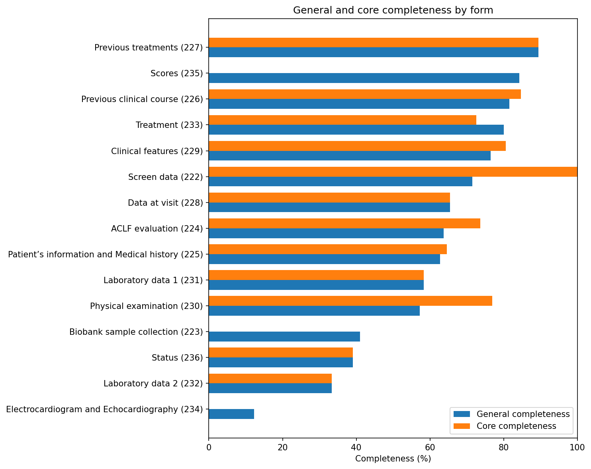
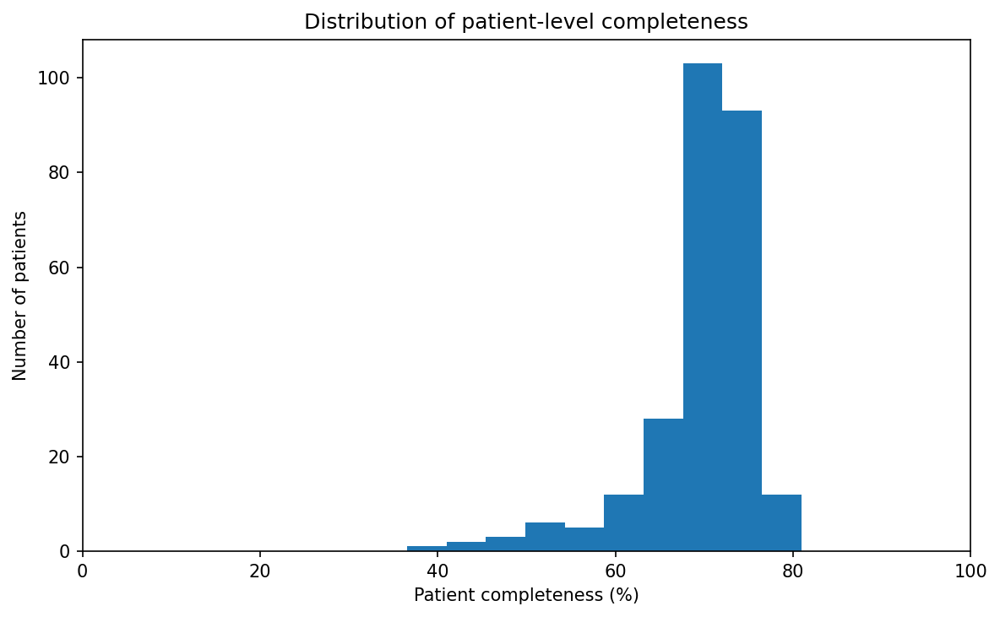

Data Quality Report
The following results were generated on 06 September 2026
The performed rule checks were conceptualized in alignment with the harmonized data quality framework by Kahn et al., which defines the dimensions Conformance, Plausibility and Completeness. The results will be displayed by dimension and subdimension.
Completeness
Completeness was assessed using the expected data-element instances derived from the registry structure and provenance metadata. Results were evaluated for general, core and mandatory data elements.
Completeness overview
The overview below summarizes form presence and element-level completeness within forms containing at least one recorded value.
| Metric | Completeness |
|---|---|
| Form presence completeness | 98.31% |
| Overall element completeness | 69.47% |
| Basic form completeness | 77.21% |
| Longitudinal form completeness | 66.78% |
General, core and mandatory completeness
General completeness considered all expected data elements. Core completeness considered elements classified as core. Mandatory completeness considered elements marked as mandatory in the registry structure.
| Assessment level | General | Core | Mandatory |
|---|---|---|---|
| Overall element completeness | 69.47% | 71.25% | 100.00% |
| Basic form completeness | 77.21% | 82.52% | 100.00% |
| Longitudinal form completeness | 66.78% | 65.07% | 100.00% |
Completeness by form
The chart shows the percentage of expected data-element instances that contained a recorded value for each form.

Patient-level completeness
The following chart shows the distribution of general completeness percentages across patients.

Empty expected forms
An expected form was classified as empty when none of its expected data elements contained a recorded value.
| Form type | Expected forms | Empty forms | Empty-form rate |
|---|---|---|---|
| Basic forms | 1305 | 13 | 1.00% |
| Longitudinal forms | 3950 | 76 | 1.92% |
Conformance Checks
Value Conformance
Value conformance checks checked whether reported values conformed to hard-coded constraints defined in the Metadata Repository (MDR). Different checks were applied to different data element types.
| Check | What was checked | Assessed values | Violations | Violation rate |
|---|---|---|---|---|
| Boolean conformance | Checks whether recorded values are “true” or “false”. | 1805 | 0 | 0.00% |
| Float conformance | Checks whether recorded values are numerical. | 18261 | 0 | 0.00% |
| Integer conformance | Checks whether recorded values are whole numbers. | 12572 | 0 | 0.00% |
| Permissible-value conformance | Checks whether enumerated types contain only values predefined in the MDR | 73026 | 0 | 0.00% |
| Single-choice conformance | Checks whether enumerated types with single-choice input (radio buttons, dropdowns) contain only one recorded value. | 58517 | 0 | 0.00% |
| Date-format conformance | Checks that date type elements contain values conforming to the date format defined in the MDR | 3233 | 1 | 0.03% |
| Numeric-range conformance | Checks whether recorded numerical values fall within the minimum and maximum limits defined for the corresponding data element in the MDR | 34641 | 4 | 0.01% |
Computational Conformance
Computational conformance checks targeted automatic inputs coded in the registry´s frontend.
Calculation checks
Checks whether automatically calculated values are consistent with values independently recalculated from the recorded source variables using the implemented calculation formula.
Assessment scope: All instances of calculated values for which the target value and the source values required to reproduce the calculation were available.
A total of 11 calculation checks were performed. Across these checks, 2404 calculable instances were assessed. 148 violations were identified, corresponding to 6.16% .
| Calculation | Assessed instances | Violations | Violation rate |
|---|---|---|---|
| MELD_scores | 397 | 72 | 18.14% |
| MELD_Na_scores | 394 | 14 | 3.55% |
| BMI_basic | 391 | 7 | 1.79% |
| MAP_aclf_examination | 250 | 15 | 6.00% |
| MAP_physical_examination | 405 | 40 | 9.88% |
| SPO2_FIO2_ratio | 140 | 0 | 0.00% |
| PAO2_FIO2_ratio | 27 | 0 | 0.00% |
| Maddrey_scores | 9 | 0 | 0.00% |
| CLIF_C_AD_scores | 391 | 0 | 0.00% |
| organ_failures_scores | 0 | 0 | nan% |
| CLIF_OF_scores | 0 | 0 | nan% |
Import checks
Checks whether values automatically imported between registry forms are identical to the corresponding recorded source values
Assessment scope:
A total of 33 import checks were performed. Across these checks, 9578 import instances were assessed. 60 violations were identified, corresponding to 0.63% .
Relational conformance
Checks whether relationships between the registry export and the supporting structural and provenance metadata are internally consistent. This includes verifying that exported source identifiers exist in the data dictionary, patient identifiers can be mapped across datasets, recorded data elements are expected for the corresponding patient, and referenced form versions exist in the available metadata.
A total of 4 relational conformance checks were performed. Violations were detected in 2 checks, with 51 individual violations identified in total.
| Check | Assessment unit | Assessed | Violations | Violation rate |
|---|---|---|---|---|
| Source ID existence | Unique source IDs | 451 | 0 | 0.00% |
| Patient ID mapping | Unique patient IDs | 313 | 48 | 15.34% |
| Element expected for patient | Recorded patient–element instances | 108683 | 3 | 0.00% |
| Form-version existence | Referenced form versions | 43 | 0 | 0.00% |
Plausibility
Plausibility checks assess whether recorded values are credible in relation to other values, time points or expected clinical developments.
Atemporal plausibility
longitudinal plausibility
Checks whether repeated measurements of selected variables for the same patient remain within predefined limits of variation across different episodes.
Assessment scope: All patient-variable groups containing valid observations from at least two distinct episode dates.
A total of 13 longitudinal plausibility checks were performed. Across these checks, 668 comparisons were assessed. 50 violations were identified, corresponding to a pooled violation rate of 7.49% .
Detailed results for the individual longitudinal checks are provided in the accompanying violation tables.
Temporal plausibility
Temporal Plausibility checks values against constraints defined in the date_rules table.
Assessment scope: All dates in date_rules.csv, for which a rule is marked “True”.
A total of 5 temporal plausibility checks were performed. Across these checks, 9495 date instances were assessed. 819 violations were identified, corresponding to a pooled violation rate of 8.63% .
Detailed results for the individual temporal plausibility checks are provided in the accompanying violation tables.